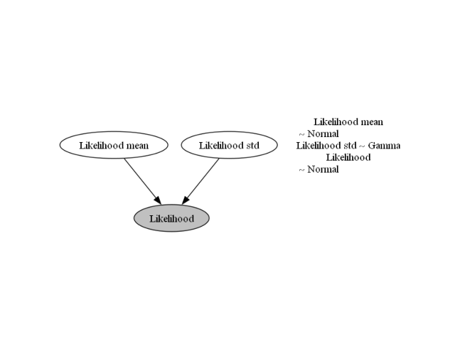
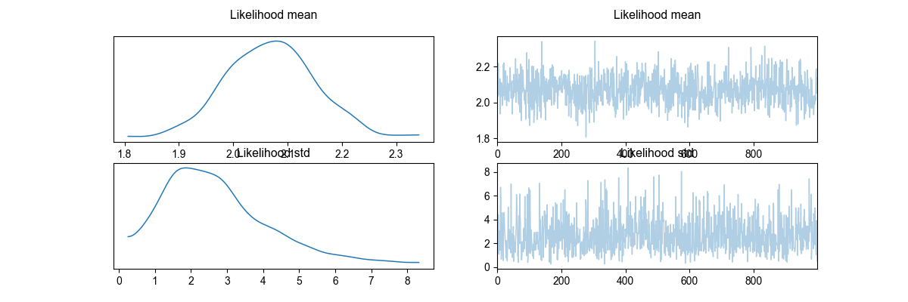
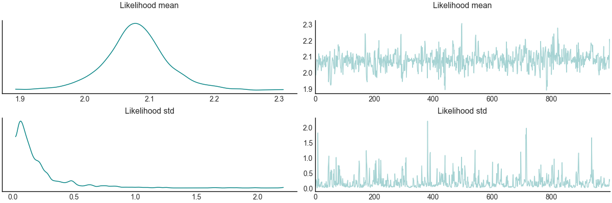
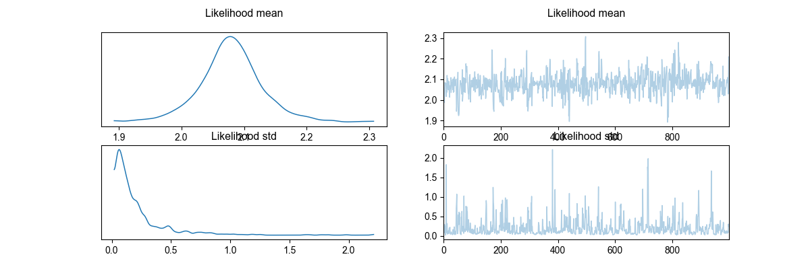
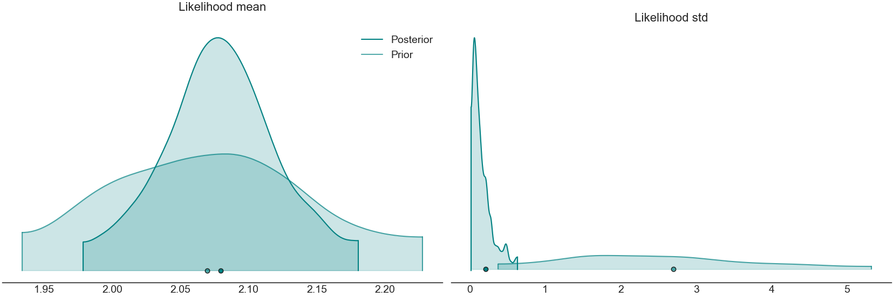
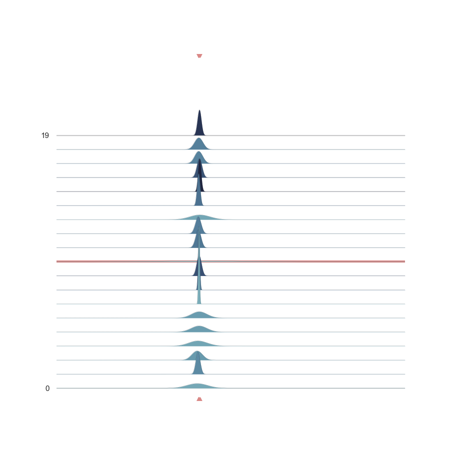

Note
Go to the end to download the full example code
Getting started with Visual Bayesic¶
Check out the tutorial.xircuit file to see the visual representation of the code below. from argparse import ArgumentParser
- 
- 
- 
- 
- 
- 
Executing: NormalSampler
Executing: GammaSampler
Executing: NormalSampler
Executing: PyroModel
Executing: VisualizeModelGraph
Executing: FullInference
Warmup: 0%| | 0/2000 [00:00, ?it/s]
Warmup: 0%| | 10/2000 [00:00, 51.42it/s, step size=2.26e-02, acc. prob=0.673]
Warmup: 1%| | 16/2000 [00:00, 41.05it/s, step size=9.33e-02, acc. prob=0.747]
Warmup: 1%|▏ | 22/2000 [00:00, 43.93it/s, step size=2.06e-02, acc. prob=0.736]
Warmup: 1%|▏ | 29/2000 [00:00, 51.26it/s, step size=5.96e-02, acc. prob=0.762]
Warmup: 2%|▏ | 38/2000 [00:00, 62.51it/s, step size=4.23e-02, acc. prob=0.765]
Warmup: 2%|▎ | 45/2000 [00:00, 58.66it/s, step size=2.08e-02, acc. prob=0.763]
Warmup: 3%|▍ | 62/2000 [00:00, 88.05it/s, step size=9.51e-02, acc. prob=0.781]
Warmup: 4%|▍ | 72/2000 [00:01, 90.17it/s, step size=1.94e-01, acc. prob=0.787]
Warmup: 4%|▌ | 86/2000 [00:01, 102.42it/s, step size=3.66e-02, acc. prob=0.779]
Warmup: 5%|▋ | 97/2000 [00:01, 93.28it/s, step size=1.80e-01, acc. prob=0.789]
Warmup: 6%|▋ | 124/2000 [00:01, 139.01it/s, step size=1.89e-01, acc. prob=0.775]
Warmup: 8%|▊ | 157/2000 [00:01, 190.31it/s, step size=2.46e-01, acc. prob=0.771]
Warmup: 9%|█ | 189/2000 [00:01, 225.25it/s, step size=5.22e-01, acc. prob=0.776]
Warmup: 11%|█▏ | 223/2000 [00:01, 246.60it/s, step size=2.41e-01, acc. prob=0.776]
Warmup: 13%|█▍ | 256/2000 [00:01, 268.67it/s, step size=1.46e+00, acc. prob=0.776]
Warmup: 14%|█▌ | 286/2000 [00:01, 276.60it/s, step size=1.30e-01, acc. prob=0.775]
Warmup: 16%|█▋ | 315/2000 [00:02, 260.37it/s, step size=1.14e+00, acc. prob=0.779]
Warmup: 17%|█▉ | 342/2000 [00:02, 260.60it/s, step size=5.53e-01, acc. prob=0.779]
Warmup: 19%|██ | 379/2000 [00:02, 289.90it/s, step size=5.31e-01, acc. prob=0.780]
Warmup: 21%|██▎ | 414/2000 [00:02, 305.36it/s, step size=7.11e-01, acc. prob=0.782]
Warmup: 22%|██▍ | 446/2000 [00:02, 306.05it/s, step size=5.73e-01, acc. prob=0.783]
Warmup: 24%|██▌ | 477/2000 [00:02, 272.23it/s, step size=2.64e-01, acc. prob=0.781]
Warmup: 25%|██▊ | 506/2000 [00:02, 254.02it/s, step size=5.71e-01, acc. prob=0.782]
Warmup: 27%|██▉ | 535/2000 [00:02, 262.90it/s, step size=4.05e-01, acc. prob=0.782]
Warmup: 28%|███▏ | 569/2000 [00:02, 283.40it/s, step size=2.48e-01, acc. prob=0.782]
Warmup: 30%|███▎ | 603/2000 [00:03, 299.07it/s, step size=3.81e-01, acc. prob=0.783]
Warmup: 32%|███▍ | 635/2000 [00:03, 304.34it/s, step size=3.29e-01, acc. prob=0.784]
Warmup: 33%|███▋ | 666/2000 [00:03, 301.85it/s, step size=3.87e-01, acc. prob=0.784]
Warmup: 35%|███▊ | 703/2000 [00:03, 321.55it/s, step size=6.87e-01, acc. prob=0.786]
Warmup: 38%|████▏ | 751/2000 [00:03, 366.89it/s, step size=6.34e-01, acc. prob=0.786]
Warmup: 40%|████▎ | 791/2000 [00:03, 375.60it/s, step size=9.87e-01, acc. prob=0.787]
Warmup: 42%|████▌ | 832/2000 [00:03, 383.18it/s, step size=4.25e-01, acc. prob=0.787]
Warmup: 44%|████▊ | 871/2000 [00:03, 374.22it/s, step size=6.27e-01, acc. prob=0.788]
Warmup: 45%|████▉ | 909/2000 [00:03, 335.44it/s, step size=5.71e-01, acc. prob=0.788]
Warmup: 47%|█████▏ | 949/2000 [00:04, 350.53it/s, step size=1.08e+00, acc. prob=0.788]
Warmup: 49%|█████▍ | 985/2000 [00:04, 302.19it/s, step size=8.09e-02, acc. prob=0.787]
Sample: 51%|█████ | 1017/2000 [00:04, 247.10it/s, step size=2.84e-01, acc. prob=0.960]
Sample: 52%|█████▏ | 1045/2000 [00:04, 242.93it/s, step size=2.84e-01, acc. prob=0.966]
Sample: 54%|█████▎ | 1071/2000 [00:04, 217.29it/s, step size=2.84e-01, acc. prob=0.968]
Sample: 55%|█████▍ | 1095/2000 [00:04, 197.04it/s, step size=2.84e-01, acc. prob=0.974]
Sample: 56%|█████▌ | 1116/2000 [00:04, 190.65it/s, step size=2.84e-01, acc. prob=0.976]
Sample: 57%|█████▋ | 1139/2000 [00:05, 198.30it/s, step size=2.84e-01, acc. prob=0.975]
Sample: 58%|█████▊ | 1160/2000 [00:05, 190.47it/s, step size=2.84e-01, acc. prob=0.975]
Sample: 59%|█████▉ | 1182/2000 [00:05, 194.75it/s, step size=2.84e-01, acc. prob=0.975]
Sample: 60%|██████ | 1202/2000 [00:05, 196.12it/s, step size=2.84e-01, acc. prob=0.977]
Sample: 61%|██████ | 1222/2000 [00:05, 182.86it/s, step size=2.84e-01, acc. prob=0.978]
Sample: 62%|██████▏ | 1241/2000 [00:05, 179.40it/s, step size=2.84e-01, acc. prob=0.978]
Sample: 63%|██████▎ | 1260/2000 [00:05, 180.35it/s, step size=2.84e-01, acc. prob=0.978]
Sample: 64%|██████▍ | 1282/2000 [00:05, 190.42it/s, step size=2.84e-01, acc. prob=0.977]
Sample: 65%|██████▌ | 1302/2000 [00:05, 186.71it/s, step size=2.84e-01, acc. prob=0.976]
Sample: 66%|██████▌ | 1324/2000 [00:06, 195.77it/s, step size=2.84e-01, acc. prob=0.977]
Sample: 67%|██████▋ | 1344/2000 [00:06, 189.06it/s, step size=2.84e-01, acc. prob=0.977]
Sample: 68%|██████▊ | 1366/2000 [00:06, 194.51it/s, step size=2.84e-01, acc. prob=0.974]
Sample: 69%|██████▉ | 1386/2000 [00:06, 190.01it/s, step size=2.84e-01, acc. prob=0.975]
Sample: 70%|███████ | 1406/2000 [00:06, 187.64it/s, step size=2.84e-01, acc. prob=0.975]
Sample: 71%|███████▏ | 1427/2000 [00:06, 193.47it/s, step size=2.84e-01, acc. prob=0.976]
Sample: 72%|███████▏ | 1447/2000 [00:06, 182.29it/s, step size=2.84e-01, acc. prob=0.976]
Sample: 73%|███████▎ | 1466/2000 [00:06, 182.56it/s, step size=2.84e-01, acc. prob=0.976]
Sample: 74%|███████▍ | 1485/2000 [00:06, 182.14it/s, step size=2.84e-01, acc. prob=0.976]
Sample: 75%|███████▌ | 1504/2000 [00:07, 173.76it/s, step size=2.84e-01, acc. prob=0.976]
Sample: 76%|███████▌ | 1522/2000 [00:07, 171.27it/s, step size=2.84e-01, acc. prob=0.977]
Sample: 77%|███████▋ | 1543/2000 [00:07, 180.79it/s, step size=2.84e-01, acc. prob=0.976]
Sample: 78%|███████▊ | 1563/2000 [00:07, 185.09it/s, step size=2.84e-01, acc. prob=0.976]
Sample: 79%|███████▉ | 1583/2000 [00:07, 188.58it/s, step size=2.84e-01, acc. prob=0.976]
Sample: 80%|████████ | 1603/2000 [00:07, 190.64it/s, step size=2.84e-01, acc. prob=0.975]
Sample: 81%|████████ | 1623/2000 [00:07, 191.02it/s, step size=2.84e-01, acc. prob=0.975]
Sample: 82%|████████▏ | 1643/2000 [00:07, 186.76it/s, step size=2.84e-01, acc. prob=0.975]
Sample: 83%|████████▎ | 1663/2000 [00:07, 190.54it/s, step size=2.84e-01, acc. prob=0.974]
Sample: 84%|████████▍ | 1688/2000 [00:07, 205.86it/s, step size=2.84e-01, acc. prob=0.973]
Sample: 85%|████████▌ | 1709/2000 [00:08, 203.24it/s, step size=2.84e-01, acc. prob=0.974]
Sample: 86%|████████▋ | 1730/2000 [00:08, 199.86it/s, step size=2.84e-01, acc. prob=0.974]
Sample: 88%|████████▊ | 1751/2000 [00:08, 195.29it/s, step size=2.84e-01, acc. prob=0.974]
Sample: 89%|████████▊ | 1771/2000 [00:08, 192.57it/s, step size=2.84e-01, acc. prob=0.975]
Sample: 90%|████████▉ | 1793/2000 [00:08, 200.35it/s, step size=2.84e-01, acc. prob=0.975]
Sample: 91%|█████████ | 1814/2000 [00:08, 182.84it/s, step size=2.84e-01, acc. prob=0.975]
Sample: 92%|█████████▏| 1834/2000 [00:08, 186.80it/s, step size=2.84e-01, acc. prob=0.974]
Sample: 93%|█████████▎| 1853/2000 [00:08, 187.00it/s, step size=2.84e-01, acc. prob=0.974]
Sample: 94%|█████████▍| 1879/2000 [00:08, 203.60it/s, step size=2.84e-01, acc. prob=0.973]
Sample: 95%|█████████▌| 1900/2000 [00:09, 189.62it/s, step size=2.84e-01, acc. prob=0.974]
Sample: 96%|█████████▌| 1920/2000 [00:09, 183.61it/s, step size=2.84e-01, acc. prob=0.974]
Sample: 97%|█████████▋| 1942/2000 [00:09, 192.47it/s, step size=2.84e-01, acc. prob=0.974]
Sample: 98%|█████████▊| 1963/2000 [00:09, 197.21it/s, step size=2.84e-01, acc. prob=0.974]
Sample: 99%|█████████▉| 1983/2000 [00:09, 193.07it/s, step size=2.84e-01, acc. prob=0.973]
Sample: 100%|██████████| 2000/2000 [00:09, 208.81it/s, step size=2.84e-01, acc. prob=0.974]
Executing: ArvizObject
C:\Users\MigueldelaVarga\PycharmProjects\VisualBayesic\venv\lib\site-packages\arviz\data\io_pyro.py:157: UserWarning: Could not get vectorized trace, log_likelihood group will be omitted. Check your model vectorization or set log_likelihood=False
warnings.warn(
Executing: PlotPrior
Executing: PlotTrace
Executing: PlotDensity
Executing: PlotNormalLikelihoodJoy
Setting Backend To: AvailableBackends.numpy
Finished Executing
from argparse import ArgumentParser
from xai_components.base import SubGraphExecutor
from xai_components.xai_plotting.probabilistic_plot import PlotDensity, PlotNormalLikelihoodJoy, PlotPrior, ArvizObject, PlotTrace, VisualizeModelGraph
from xai_components.xai_probabilistic_models.probabilistic_models_I import PyroModel
from xai_components.xai_probability_distributions.probabilistic_distributions import GammaSampler, NormalSampler
from xai_components.xai_pyro.probabilistic_node import FullInference
def main(args):
ctx = {}
ctx['args'] = args
c_0 = VisualizeModelGraph()
c_1 = NormalSampler()
c_2 = NormalSampler()
c_3 = FullInference()
c_4 = ArvizObject()
c_5 = PlotNormalLikelihoodJoy()
c_6 = GammaSampler()
c_7 = PlotDensity()
c_8 = PlotTrace()
c_9 = PlotPrior()
c_10 = PyroModel()
c_0.model_function = c_10.model
c_0.model_function = c_10.model
c_0.model_function = c_10.model
c_1.name.value = 'Likelihood\n'
c_1.mean = c_2.sample
c_1.std = c_6.sample
c_1.obs.value = [2.12, 2.06, 2.08, 2.05]
c_2.name.value = 'Likelihood mean\n'
c_2.mean.value = 2.07
c_2.std.value = 0.08
c_3.model = c_10.model
c_3.num_samples.value = 1000
c_4.mcmc = c_3.mcmc
c_4.prior_predictive_values = c_3.prior_predictive
c_4.posterior_predictive_values = c_3.posterior_predictive
c_5.az_data = c_4.az_data
c_5.mean_sample_name.value = 'Likelihood mean\n'
c_5.std_sample_name.value = 'Likelihood std'
c_5.y_sample_name.value = 'Likelihood\n'
c_5.n_samples.value = 19
c_6.name.value = 'Likelihood std'
c_6.concentration.value = 3.3
c_6.rate.value = 1.2
c_7.az_data = c_4.az_data
c_8.az_data = c_4.az_data
c_9.az_data = c_4.az_data
c_10.arg1 = c_1.sample
c_0.next = c_3
c_1.next = c_10
c_2.next = c_6
c_3.next = c_4
c_4.next = c_9
c_5.next = None
c_6.next = c_1
c_7.next = c_5
c_8.next = c_7
c_9.next = c_8
c_10.next = c_0
next_component = c_2
while next_component:
next_component = next_component.do(ctx)
if __name__ == '__main__':
parser = ArgumentParser()
main(parser.parse_args())
print('\nFinished Executing')
Total running time of the script: (0 minutes 12.333 seconds)